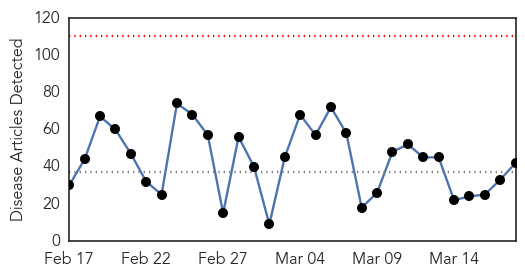
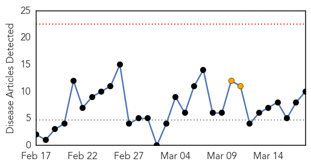

Unknown
30-Day Web Trend
0 alerts, 0 warnings

30-Day Twitter Trend
0 alerts, 0 warnings

Article Locations

Article Confidences

Top Articles:
- 0.972
- Flu kills another Cambodian tot
- 0.933
- CFIA finds feed failed to infect pigs
- 0.917
- Chicago Tribune
- 0.917
- Chicago Tribune
- 0.917
- Chicago Tribune
- 0.917
- Chicago Tribune
- 0.917
- Chicago Tribune
- 0.917
- Chicago Tribune
- 0.917
- Chicago Tribune
- 0.917
- Chicago Tribune
- 0.910
- The world windows to Thailand
- 0.910
- The world windows to Thailand
- 0.874
- Playground partygoers felled by bug - national
- 0.866
- EU's Van Rompuy to meet Putin in Moscow -Interfax
- 0.866
- Russia's Lavrov tells U.S. counterpart Kerry sanctions "unacceptable"
- 0.866
- Syria creates "space agency" in the midst of war
- 0.866
- U.S. condemns Putin move to annex Ukraine's Crimea region
- 0.866
- Obama spoke to Germany's Merkel about Ukraine -White House
- 0.866
- U.S. halts Syrian Embassy, consulate operations, tells diplomats to leave
- 0.866
- News helicopter crashes in downtown Seattle, setting cars on fire
- 0.866
- Crimea returns to "home port"
- 0.866
- Poland says Russia's action in Crimea unacceptable
- 0.866
- EU says no impact from Crimea tension on nuclear talks with Iran
- 0.866
- Egypt security forces prevent Islamist news conference
- 0.866
- Russia's Putin starts address to parliament on Crimea to applause
- 0.866
- Kremlin scoffs at Western sanctions against Russians over Crimea
- 0.866
- Rosneft CEO says Russian business may turn elsewhere over sanctions-report
- 0.866
- Russian lawmakers repond caustically to sanctions over Crimea
- 0.866
- Putin moves ahead with procedure to bring Crimea into Russia
- 0.866
- China starts search for missing jet in Chinese territory
- 0.866
- China says no evidence of hijack, terror attack by Chinese passengers
- 0.795
- In IBS, non-GI issues are more powerful than symptoms in patients' health perceptions
- 0.759
- Officials run second test to confirm monkey fever in patient
- 0.756
- 281 posts of medical officers vacant in Umerkot
- 0.701
- Early detection of childhood eye cancer doesn't always improve survival, prevent eye loss
- 0.670
- Mexico's Oil Belongs to Its Citizens, Not the Global 1%
- 0.653
- Live: Putin addresses Russian parliament on Crimea
- 0.618
- 30% rise in patients at GMCH post Holi revelry
- 0.603
- As Health Crisis Looms, Cameroon Cracks Down On Illegal Clinics
- 0.588
- Mobile app for doctors to alert govt about new TB patients
- 0.565
- WHO and regional malaria experts reiterate warning about drug resistance - World
- 0.535
- Virus nails hospital, causes massive data breach
Top Tweets:
-
No tweets found for Mar 18, 2014
Measles
30-Day Web Trend
0 alerts, 2 warnings

30-Day Twitter Trend
0 alerts, 0 warnings

Article Locations

Article Confidences

Top Articles:
- 0.986
- State health managers urge measles vaccination
- 0.983
- Measles outbreak spreads to Burnaby from Chilliwack
- 0.973
- which adults should get vaccinated?
- 0.969
- Measles Outbreak Grows to 20 Cases in NYC
- 0.919
- Measles spreading in both New York and California
- 0.904
- Measles Outbreaks Coast to Coast
- 0.902
- Measles case in Manitoba worries parents of young children
- 0.869
- 14 of California's 32 measles cases this year were intentionally unvaccinated
- 0.710
- Measles keep kids out of school for another week
- 0.695
- Measles strikes in B.C and New York
Top Tweets:
-
No tweets found for Mar 18, 2014